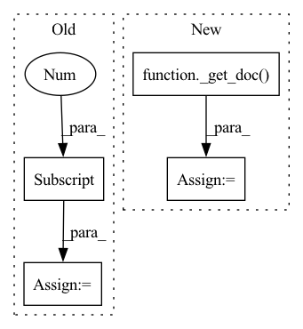

Pattern ID :31047
Before Change
with_parts = casted.map(lambda doc: _add_full_part(doc))
assert "entities" in with_parts.column_names
assert "parts" in with_parts.column_names
doc0 = with_parts[0]
assert set(doc0) == {"entities", "parts"}
assert doc0.entities == conll2003_test_split[0].entities
part0 = doc0.parts[0]After Change
def test_cast_document_type(dataset_train):
casted = dataset_train.cast_document_type(CoNLL2002WithPartsDocument)
doc0_orig = _get_doc( dataset_train)
with_parts = casted.map(lambda doc: _add_full_part(doc))
assert "entities" in with_parts.column_names
assert "parts" in with_parts.column_names
doc0 = _get_doc(with_parts)In pattern: SUPERPATTERN
Frequency: 5
Non-data size: 4
Instances Fragment ID: 91147407
Project Name: christophalt/pytorch-ie
Commit Name: acfe5ef1a4a600eab2e01e310b9bdb19b33045e8
Time: 2022-09-05
Author: ArneBinder@users.noreply.github.com
File Name: tests/data/test_dataset_casting.py
M Class Name: AnonimousClass
N Class Name: AnonimousClass
M Method Name: test_cast_document_type(1)
N Method Name: test_cast_document_type(1)
M Parent Class:
N Parent Class:
M File Name: tests/data/test_dataset_casting.py
N File Name: tests/data/test_dataset_casting.py
M Start Line: 64
M End Line: 67
N Start Line: 75
N End Line: 79
Before Change
// just add "parts" to have another field to swap "entities" with
casted = conll2003_test_split.cast_document_type(CoNLL2002WithPartsDocument)
with_parts = casted.map(lambda doc: _add_full_part(doc))
doc_with_parts = with_parts[0]
swapped = with_parts.cast_document_type(
DocumentWithPartsAndEntitiesSwapped,
field_mapping={"entities": "parts", "parts": "entities"},After Change
// just add "parts" to have another field to swap "entities" with
casted = dataset_train.cast_document_type(CoNLL2002WithPartsDocument)
with_parts = casted.map(lambda doc: _add_full_part(doc))
doc_with_parts = _get_doc( with_parts)
swapped = with_parts.cast_document_type(
DocumentWithPartsAndEntitiesSwapped,
field_mapping={"entities": "parts", "parts": "entities"}, Fragment ID: 91147405
Project Name: christophalt/pytorch-ie
Commit Name: acfe5ef1a4a600eab2e01e310b9bdb19b33045e8
Time: 2022-09-05
Author: ArneBinder@users.noreply.github.com
File Name: tests/data/test_dataset_casting.py
M Class Name: AnonimousClass
N Class Name: AnonimousClass
M Method Name: test_cast_document_type_swap_fields(1)
N Method Name: test_cast_document_type_swap_fields(1)
M Parent Class:
N Parent Class:
M File Name: tests/data/test_dataset_casting.py
N File Name: tests/data/test_dataset_casting.py
M Start Line: 174
M End Line: 184
N Start Line: 186
N End Line: 202
Before Change
assert "parts" in casted.column_names
assert "ents" in casted.column_names
doc_casted = casted[0]
assert set(doc_casted) == {"parts", "ents"}
with pytest.raises(
ValueError,After Change
assert "parts" in casted.column_names
assert "ents" in casted.column_names
doc_casted = _get_doc( casted)
assert set(doc_casted) == {"parts", "ents"}
with pytest.raises(
ValueError, Fragment ID: 91147402
Project Name: christophalt/pytorch-ie
Commit Name: acfe5ef1a4a600eab2e01e310b9bdb19b33045e8
Time: 2022-09-05
Author: ArneBinder@users.noreply.github.com
File Name: tests/data/test_dataset_casting.py
M Class Name: AnonimousClass
N Class Name: AnonimousClass
M Method Name: test_cast_document_type_recover_field_wrong(1)
N Method Name: test_cast_document_type_recover_field_wrong(1)
M Parent Class:
N Parent Class:
M File Name: tests/data/test_dataset_casting.py
N File Name: tests/data/test_dataset_casting.py
M Start Line: 136
M End Line: 143
N Start Line: 149
N End Line: 155
Before Change
with_parts = casted.map(lambda doc: _add_full_part(doc))
assert "ents" in with_parts.column_names
assert "parts" in with_parts.column_names
doc0 = with_parts[0]
assert set(doc0) == {"ents", "parts"}
assert doc0.ents == conll2003_test_split[0].entities
part0 = doc0.parts[0]After Change
def test_cast_document_type_rename_field(dataset_train):
doc0_orig = _get_doc( dataset_train)
casted = dataset_train.cast_document_type(
DocumentWithEntsAndParts, field_mapping={"entities": "ents"}
)
with_parts = casted.map(lambda doc: _add_full_part(doc)) Fragment ID: 91147417
Project Name: christophalt/pytorch-ie
Commit Name: acfe5ef1a4a600eab2e01e310b9bdb19b33045e8
Time: 2022-09-05
Author: ArneBinder@users.noreply.github.com
File Name: tests/data/test_dataset_casting.py
M Class Name: AnonimousClass
N Class Name: AnonimousClass
M Method Name: test_cast_document_type_rename_field(1)
N Method Name: test_cast_document_type_rename_field(1)
M Parent Class:
N Parent Class:
M File Name: tests/data/test_dataset_casting.py
N File Name: tests/data/test_dataset_casting.py
M Start Line: 159
M End Line: 162
N Start Line: 168
N End Line: 175
Before Change
with_partitions = casted.map(lambda doc: _add_full_part(doc))
assert "entities" not in with_partitions.column_names
assert "parts" in with_partitions.column_names
doc0 = with_partitions[0]
assert set(doc0) == {"parts"}
part0 = doc0.parts[0]
assert isinstance(part0, Span)After Change
with_partitions = casted.map(lambda doc: _add_full_part(doc))
assert "entities" not in with_partitions.column_names
assert "parts" in with_partitions.column_names
doc0 = _get_doc( with_partitions)
assert set(doc0) == {"parts"}
part0 = doc0.parts[0]
assert isinstance(part0, Span) Fragment ID: 91147410
Project Name: christophalt/pytorch-ie
Commit Name: acfe5ef1a4a600eab2e01e310b9bdb19b33045e8
Time: 2022-09-05
Author: ArneBinder@users.noreply.github.com
File Name: tests/data/test_dataset_casting.py
M Class Name: AnonimousClass
N Class Name: AnonimousClass
M Method Name: test_cast_document_type_remove_field(1)
N Method Name: test_cast_document_type_remove_field(1)
M Parent Class:
N Parent Class:
M File Name: tests/data/test_dataset_casting.py
N File Name: tests/data/test_dataset_casting.py
M Start Line: 79
M End Line: 93
N Start Line: 90
N End Line: 106